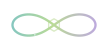

C8 Steerable OCSR + Ensemble
Three controlled encoder arms (A, B, C), beam search, RDKit validity reranking, pad/sharpen TTA, and unlabeled shard decoding.
scripts/predict_real.py

OuroborosSE(2) Vision · Selective Gating · 3D Physics
Ouroboros turns 2D chemical figures into standardized SMILES with stereochemistry, pairs reads with a confidence gate for lab reasoners, and checks generated 3D conformers against ten physical and symmetry rules.
C8 steerable encoder matches 360°-augmented CNN (65.7%) with 25% fewer parameters and zero rotated training images.
Untouched Holdout (v2)Single-shot frozen-test-v2 (n = 300) with validation-locked decoding; 54.0% on the 298-image dev-test set.
Sub-second single-thread CPU inference (ouroboros.infer) with token-probability gating and only 0.21 pp accuracy drop on PMC val.
Zero-retraining diastereomer recovery across 30 compounds (15 DOI pairs, MAE 5.25 ppm) using O(3) symmetry orbits.
01 / Functions & Modules
Every capability in the repository is a small, testable module. Uncertain reads and invalid geometries are flagged explicitly rather than guessed.
Three controlled encoder arms (A, B, C), beam search, RDKit validity reranking, pad/sharpen TTA, and unlabeled shard decoding.
scripts/predict_real.py
One-line Python predictor, FastAPI POST /predict server, and dynamic int8 / fp16 checkpoint quantizer.
ouroboros.infer · lab.quantize
Frozen molecule_context/v1 schema (ok vs ask a human, zero gold leakage) plus batched NVTX GRPO reward hooks.
lab.molecule_context · lab.grpo_verifier
Expands Me, Et, OMe, Ph, Boc, CO2Et, checks charge/element/stereo gates, embeds 0.1 Å rattles, and splits by connectivity block.
scripts/image_to_forcefield.py
Finds any well on rotated 8×12 rectangular plates (homography + chamfer) and 5-ring circular plates (SO(2) Fourier phase + notch).
ouroboros.labvision
Blocks both full-InChIKey and 14-character connectivity-block stereoisomer overlap across every training and evaluation split.
scripts/check_leakage.py
image_to_forcefield.py workflow: rejected or ambiguous structures are recorded in manifest.jsonl without silent guessing.02 / Interactive Playgrounds
Explore how Ouroboros handles 2D rotation symmetry, selective abstention for LLM lab agents, and symmetry-aware plate indexing directly in your browser.
Rotate a molecule inside the 384 px inscribed circle and watch the eight C8 orientation channels cycle cleanly.
CC(C)Cc1ccc([C@@H](C)C(=O)O)cc1
CC(C)Cc1ccc(C(C)C(=O)O)cc1
Tune --min-margin and --max-disagreement to filter uncertain reads before they reach a downstream LLM reasoner or 3D force field.
| Figure | Standardized / Expanded SMILES | Margin | Disagree | Status |
|---|
Locate any well across arbitrary 360° camera rotations on rectangular (8×12) or circular (6/12/18/24/36) plates. Click any well to inspect it.
4-corner homography maps to canonical grid; A1 corner chamfer + fiducial dot break 180° flip symmetry (99.2% unflagged accuracy).
Polar unwrap + SO(2) Fourier lattice phase mod 60°, rim notch picks the 60° sector, and off-axis dot catches mirror flips (100% unflagged).
03 / Measured Benchmarks
Hover or switch benchmark views below to inspect bootstrap 95% confidence intervals across synthetic rotations, real literature sets, and edge quantization.
Data loaded directly from committed benchmark receipts (site/assets/benchmark-data.json)
04 / Research Extensions
Pairs candidate diastereomers with HRMS formula filtering, 3D strain checks, and O(3) symmetry-orbit ¹³C/¹H NMR peak matching. On the 50-pair strain audit, 30 impossible ring-junction flips are rejected outright by RDKit 3D embedding, and on the 20 embeddable pairs MACE-OFF23 prefers the true isomer in 80% of pairs (median ΔE +1.97 kcal/mol; MMFF94s +2.60 kcal/mol, 20/20).
Audits MACE-OFF23 and AIMNet2 across strained benzene bioisosteres (BCP, BCH, 2-oxa-BCH, BCHep, cubane, azaspiro/oxetane, and hypervalent -SF₅), pairing offset-free committee force disagreement (σ_F) with conservative K-head anchor replay.
In-model ablation ladder (A0 → A6) and multi-view neural OCSR coupling (V0–V3)
05 / Run Locally or in Browser
git clone https://github.com/yaniguan/ouroboros-ocsr.git cd ouroboros-ocsr python3.11 -m venv .venv && source .venv/bin/activate pip install -r requirements-inference.txt python scripts/prepare_inference.py && pip install --no-deps -e . # Download verified weights, run fast int8 CPU API, or open 3D UI python -m ouroboros.weights fetch --arm A python -m ouroboros.infer figure.png python -m ouroboros.ui --port 8787
Verified in the 3D Lab (ouroboros.ui.compliance), with chemistry & steric/stereo gates enforced in image_to_forcefield.py:
@misc{guan2026ouroboros,
title = {Ouroboros: Rotation-Equivariant Optical Chemical Structure Recognition with Stereochemistry and 3D Physical Verification},
author = {Guan, Yani},
year = {2026},
url = {https://github.com/yaniguan/ouroboros-ocsr},
note = {v0.1.0-alpha engine, frozen-test-v2 benchmark, and ChemVeritas-600}
}